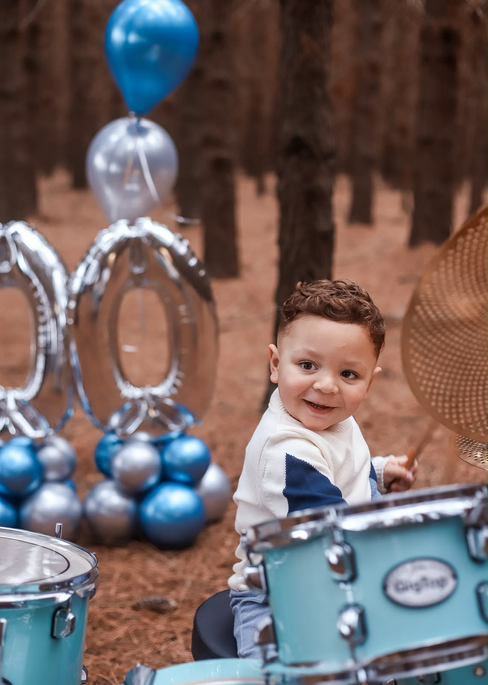

Conteúdo no Instagram
Vídeos e stories do Vicente com o seu produto ou a sua mensagem, feitos junto com os pais.

Um testemunho vivo · Rio Grande, RS
“Oi, eu sou o Vicente, e hoje vou tocar uma música pra vocês!”
Role e conheça a históriaCapítulo um
Antes de ter baquetas, o Vicente já tinha ritmo. Ele mesmo conta: foi crescendo e ficando gordinho na barriga da mamãe Daniele, dava muitos chutinhos de amor pro papai Francisco e amava ouvir música.
Em outubro de 2023 ele chegou, cem por cento sadio. Nenhum sinal, nenhum susto. E desde então, nas palavras da família, ele é
a realização de um sonho, o resultado das orações e o amor da vida dos papais.


Capítulo dois
Depois de dois dias no oxigênio, o Vicente precisou ser entubado em um pronto atendimento, que não era o lugar propício para isso. Ele precisava de um leito de UTI para ser transferido, mas o único hospital com UTI pediátrica estava enfrentando uma enchente. Não havia UTI móvel na cidade, nem leito. Depois de algumas horas, a família conseguiu um leito em uma cidade vizinha e também uma ambulância.

“Não sabemos como ele respirou até os sete meses. Ele é um milagre.”O que a família ouviu dos médicos
Capítulo três
Depois de 2 dias de propósito, os pais foram chamados para conversar com o médico. As palavras dele: “por mais que ele não tenha condições de ser transferido, o banco de leitos exige que ele seja transferido para a cidade da família.”
Sabendo que Deus estava no controle de tudo, assinaram os termos. Em seguida a equipe chegou para levá-lo, e uma das médicas pediu que a mãe se sentasse na maca. Sem entender, ela obedeceu. Eles tiraram todos os aparelhos do Vicente e o entregaram no colo dela. Naquele momento o Senhor respondeu: com aquele ato, falou com a família que estava devolvendo a vida ao Vicente.
As lágrimas foram incontroláveis. Das médicas, a família ouviu: “não sei por que fizemos isso, nem poderíamos.” E a mãe respondeu: “vocês foram usadas por Deus para me trazer a resposta.”
Ao chegar à cidade da família, o Vicente foi avaliado por mais dois otorrinos. Um não tinha resposta, mas o último disse: “não sabemos como o Vicente respirou por 7 meses, ele é um milagre.” Deus os levou àquele hospital porque queria gerar neles um testemunho.
Ainda não havia melhora alguma e os riscos eram os mesmos, mas tinham a certeza de que ele viveria. Foram transferidos e passaram por duas cirurgias, e a mão do Senhor esteve em cada uma delas.
A cada retorno, entendem que o procedimento não é permanente e que, a qualquer momento, as vias aéreas dele podem fechar e ocorrer uma parada respiratória. Mas entendem também que é o Senhor quem dá cada suspiro, cada pulsar do pulmão, e a respiração dele continua perfeita.
“Glória a um Deus que faz milagres.”Legenda do testemunho, 11 de outubro de 2024
Capítulo quatro
No dia 8 de outubro de 2024, o Vicente completou 1 ano de vida. No dia 11 de outubro de 2024, a família compartilhou pela primeira vez “um pouquinho do testemunho vivo que é o Vicente”. Nos comentários, uma pergunta se repetia: o que ele teve? A resposta está nesta página.
E dali em diante vieram os balões, os sorrisos, os primeiros passos e, claro, a primeira bateria.


Capítulo cinco
Desde antes do hospital, os pais percebiam que o Vicente amava mini tambores, baquetas, o barulho de portas batendo e de talheres batendo no prato. Amava bater as mãozinhas e vivia de olho na bateria nos cultos.
Um mês depois do hospital, em um culto, a família recebeu uma palavra: “Deus colocou sobre as mãos do Vicente o dom de tocar bateria. Ele não vai precisar de aulas ou de professores. Quando ele tocar, as pessoas vão sentir algo diferente. O que Deus derramou sobre ele é celestial.”
Hoje, a brincadeira que o Vicente mais ama é tocar bateria. Em qualquer lugar, com qualquer objeto, ele monta uma bateria e sai tocando, inclusive na escola com os colegas: ele influencia a turma toda a montar uma banda, pegar baquetas e transformar potes, pratos e tudo que encontrar em bateria.
“Instrumento nas mãos do Criador.”


Capítulo seis
de pessoas acompanham hoje o mini baterista. Quando chegou nos 100 mil, a família escreveu que cada passo dá um friozinho na barriga, sabendo que o Senhor cumpre suas promessas.
 1K
1K 20K
20K 50K
50K 100K
100K“Pai ensina o filho a tocar bateria, momento emocionante encanta a internet.”
Pra assistir com o som ligado
Toque em um vídeo para assistir no Instagram.
Convites
O Vicente toca ao lado do papai e do tio, cantores gospel. Cultos, congressos, eventos e festas, inclusive em outros estados.
Francisco, pai do Vicente · WhatsApp +55 53 99997-3944
Parcerias
Mais de 101 mil pessoas acompanham o Vicente. Se você quer fechar uma parceria, a conversa é direta com os pais dele.
Vídeos e stories do Vicente com o seu produto ou a sua mensagem, feitos junto com os pais.
Baquetas, pratos, baterias infantis e acessórios para quem está começando a tocar.
Roupas, brinquedos, material escolar e tudo o que faz parte do dia a dia de uma criança.
Se a sua proposta não está aqui, conte para a gente. Toda conversa é bem-vinda.
Francisco, pai do Vicente · WhatsApp +55 53 99997-3944

Hoje
Aquele que começou a boa obra é fiel para completá-la.
Filipenses 1:6
“Estamos vivendo com o Vicente o que, há mais de um ano, o Senhor disse que viveríamos.” A história continua sendo escrita a cada música, a cada culto, a cada respiração.